GMSL SERDES 笔记
MAX96724
MAX96724 相关资源
- product overview
- MAX96724/F/R 英文数据手册 Rev.4
- MAX96724/F/R Users Guide
- GMSL2 Channel Specification User Guide Rev 1
- MAX96717F: CSI-2 to GMSL2 Serializer Data Sheet (Rev. 5)
MAX96724 MAX9295D pipes and csi2
GMSL2 forward link and reverse link
In GMSL2, the [[forward link]] transmits data from the serializer (e.g., a camera) to the deserializer (e.g., a display or processor), while the [[[reverse link]]] transmits data in the opposite direction, from the deserializer to the serializer.
GMSL2 uses a full-duplex, bidirectional architecture, meaning both channels operate simultaneously.
Forward Channel
Transmits video and other data from the serializer to the deserializer. Operates at a fixed data rate of either 3 Gbps or 6 Gbps.
Reverse Channel
Transmits control signals, status information, and sometimes audio data from the deserializer to the serializer. Operates at a fixed data rate of 187.5 Mbps.
如何确认 DEV_ID
- 0xD
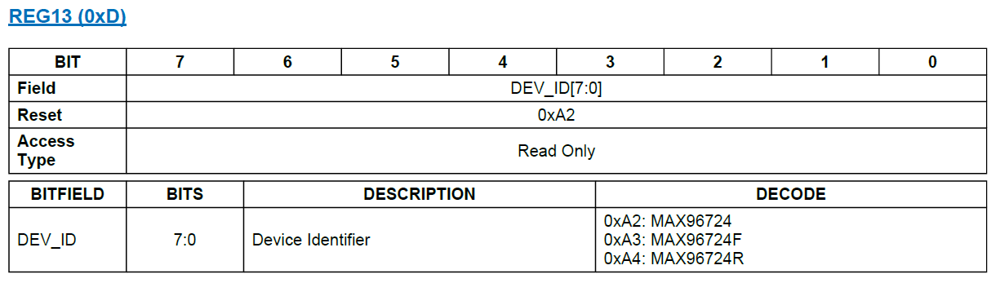
如何配置并确认 GMSL mode 和 GMSL RX rate
- 0x6
- 0x10
- 0x11
- 0x18
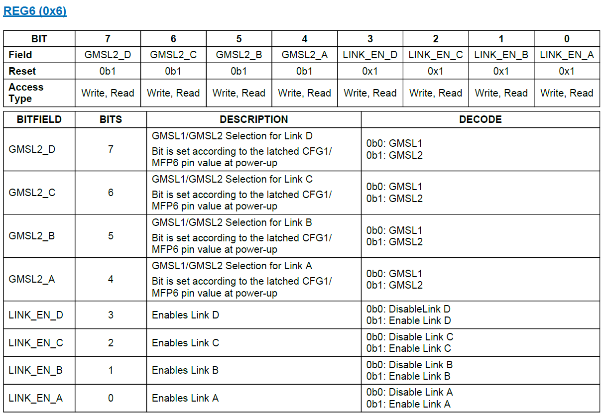
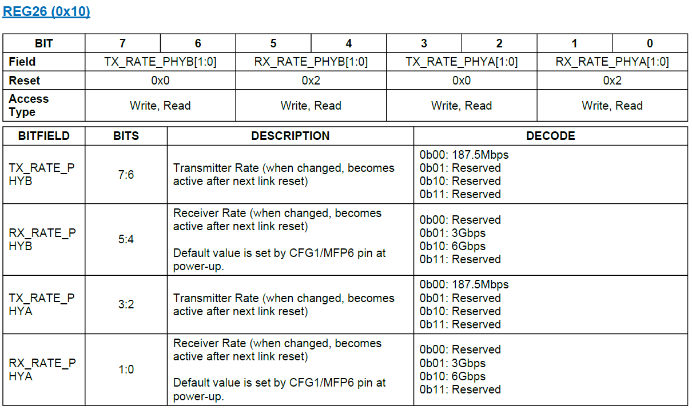
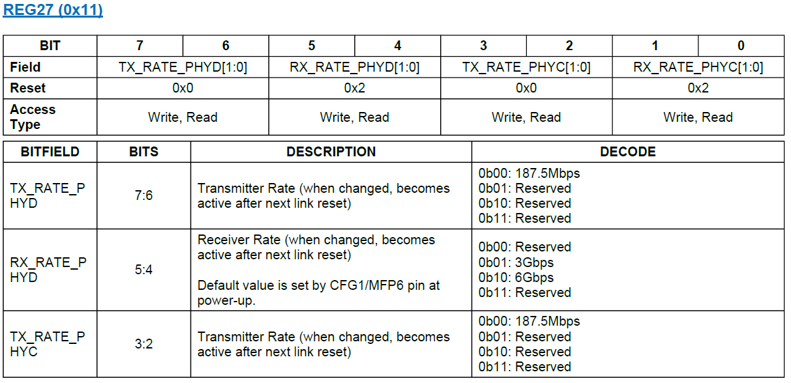
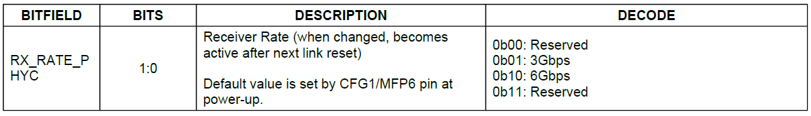
如何确认 GMSL Link Lock Status
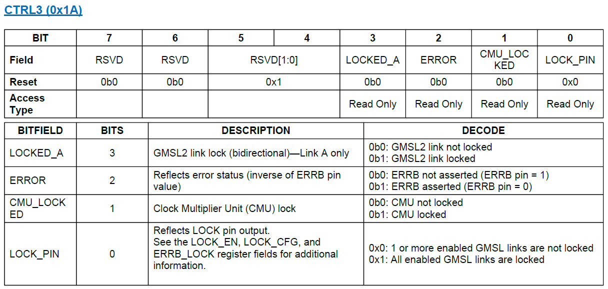
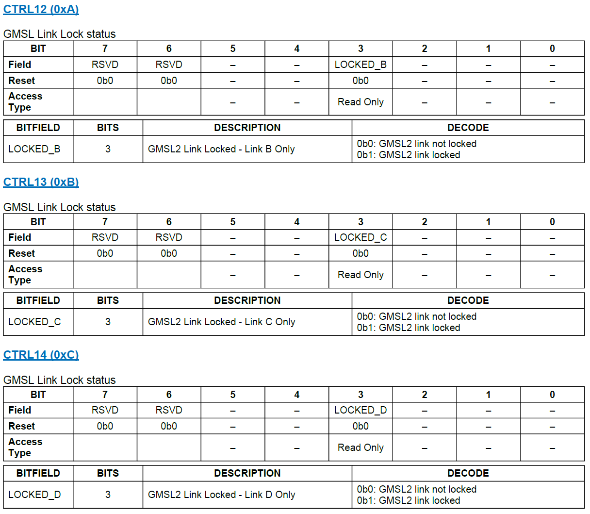
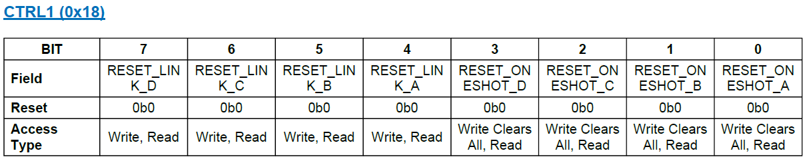
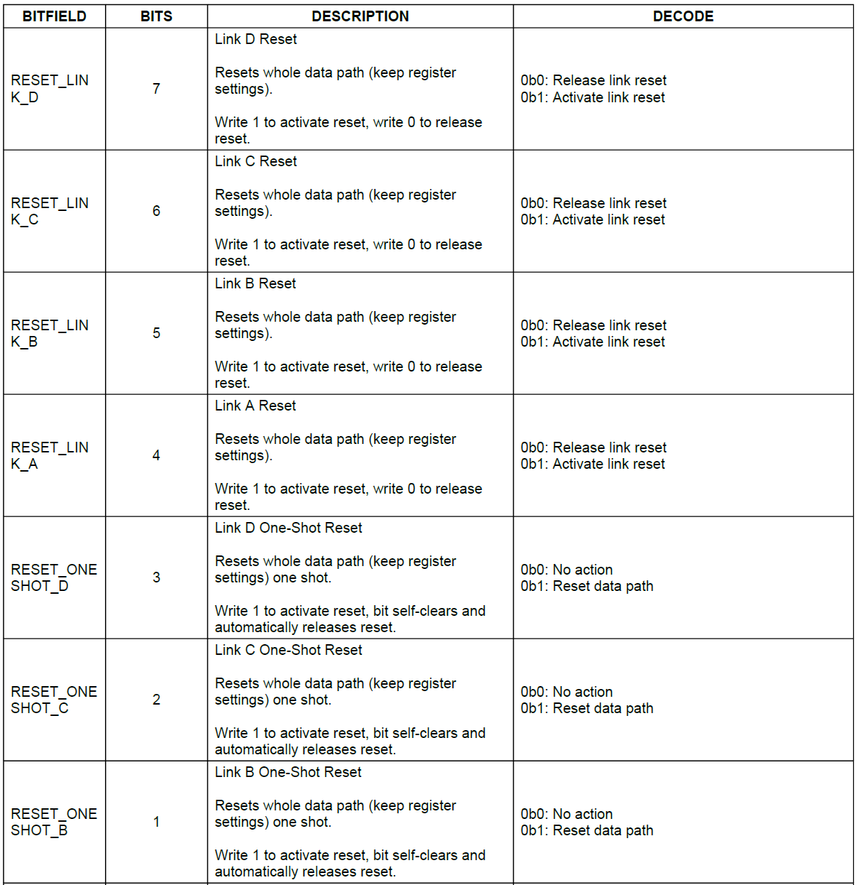
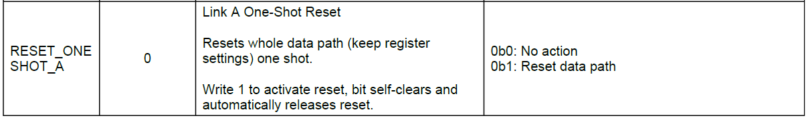
配置流程：
max96724fr-user-guide.pdf
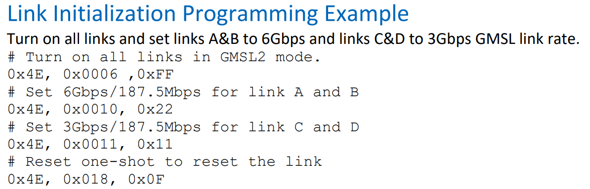
gmsl2-general-user-guide.pdf
实际调试中，系统开机内核初始化 serdes 之后，通过脚本去修改 GMSL2 link rate 为 6G
参考 gmsl2-general-user-guide.pdf 描述的流程：
- 修改 serializer and deserializer 为 6G
- 对 seserializer 执行一次 GMSL link one-shot reset 即可 (我的实验中通过对 deser GMSL link 做了一次 one-shot reset，因此对 ser 或者 deser 其中之一做一次 GMSL Link one-shot reset 即可)
gmsl2-general-user-guide.pdf 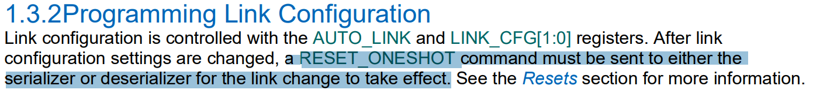
如何确认serializer 是否收到了mipi 数据以及 mipi 数据量是否超过了 GMSL 的带宽
https://www.analog.com/media/en/technical-documentation/data-sheets/max96717f.pdf
MAX96717 有 1 个 pipe line: pipe Z, 其他 serdes 自行查看相应数据手册。 VID_TX Z 包含的寄存器就是关于 PIPE Z 的寄存器。
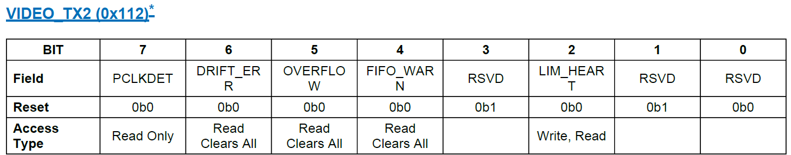 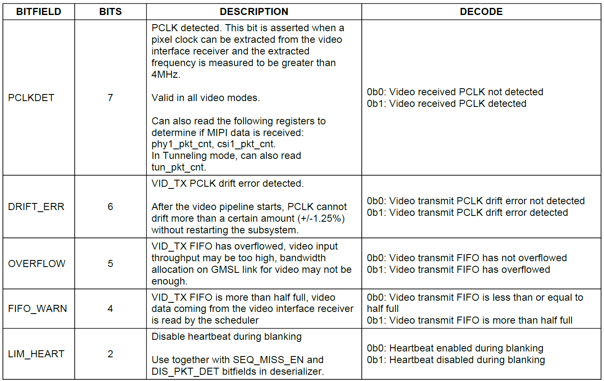
BIT 7: PCLKDET 用于标识是否收到 mipi 数据，如果该位为 1，表示收到了 mipi 数据。
BIT 5: OVERFLOW 用于标识 mipi 数据量是否超过了 GMSL 带宽，如果该位为 1，表示收到了 mipi 数据量超过了 GMSL 带宽。
- 如果当前 GMSL 带宽配置为 3G 则可以尝试调试 GMSL 为 6G。
- 如果 GMSL 已经为 6G 就只能优化 mipi 带宽或调整方案。
e.g. MAX9295D 为例：
i2ctransfer -y -f 0 w2@<slave address> 0x01 0x02 r1
i2ctransfer -y -f 0 w2@<slave address> 0x01 0x0A r1
i2ctransfer -y -f 0 w2@<slave address> 0x01 0x12 r1
i2ctransfer -y -f 0 w2@<slave address> 0x01 0x1A r1
没数据返回结果：0x0A 有数据返回结果：0x8A
关于解串器别名摄像头
MAX96717 提供了两组别名寄存器，请注意这些寄存器 bit0 reserved
| reg | description |
|---|---|
| 0x42 | SRC_A[6:0] |
| 0x43 | DST_A[6:0] |
| 0x44 | SRC_B[6:0] |
| 0x45 | DST_B[6:0] |
注意： SRC — ALIAS ADDR, DST — ORIGIN ADDR
When an 12c transaction across the GiISLlink has a device address ma!ching 1zcSRc A the dewce address as seen on theremote side is replaced by the deviceaddress in 12C DSTA
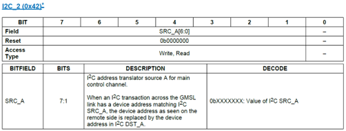
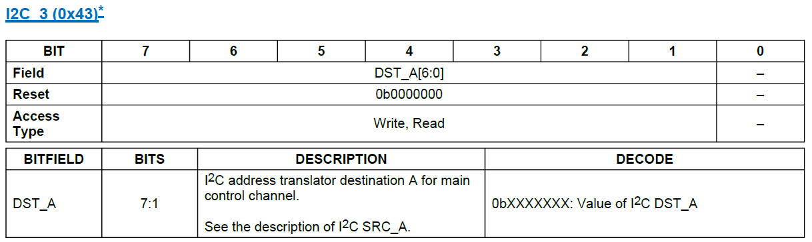
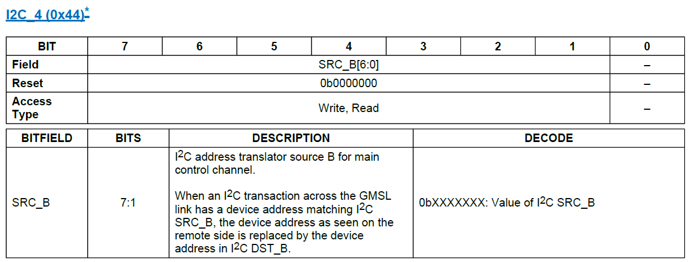
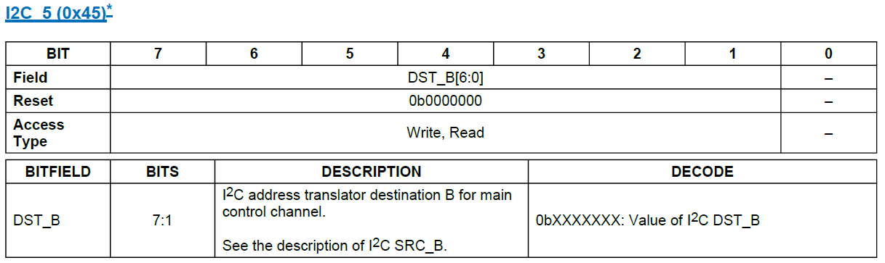
# i2ctransfer -y -f 0 w2@0x44 0x00 0x42 r1
0xa8 = 0x54 << 1
# i2ctransfer -y -f 0 w2@0x44 0x00 0x43 r1
0x52 = 0x29 << 1
# i2ctransfer -y -f 0 w2@0x44 0x00 0x44 r1
0xaa = 0x55 << 1
# i2ctransfer -y -f 0 w2@0x44 0x00 0x45 r1
0x50 = 0x28 << 1
手动控制 SER MFP 对外输出高低电平
MAX96717 MFP ctrl register
// MFP0 ~ MFP16
static uint16_t max96717_mfp_ctrl_regs[] = {
0x02BE, 0x02C1, 0x02C4, 0x02C7,
0x02CA, 0x02CD, 0x02D0, 0x02D3,
0x02D6, 0x02D9, 0x02DC, 0x02DF,
0x02E2, 0x02E5, 0x02E8, 0x02EB,
0x2EE};
输出低电平，value 设置为 0x80
输出高电平，value 设置为 0x90
serializer device i2c address （如果已经别名请使用alias i2c address）
命令格式：
i2ctransfer -y -f <i2c_bus> w3@<i2c_addr> <reg_high_8bit> <reg_low_8bit> <value>
假设 i2c bus 0, i2c alias address 0x44，MFP6, MFP7 输出低电平
i2ctransfer -y -f 0 w3@0x44 0x02 0xD0 0x80
i2ctransfer -y -f 0 w3@0x44 0x02 0xD3 0x80
假设 i2c bus 0, i2c alias address 0x44，MFP6, MFP7 输出高电平
i2ctransfer -y -f 0 w3@0x44 0x02 0xD0 0x90
i2ctransfer -y -f 0 w3@0x44 0x02 0xD3 0x90
MAX96724 MAX96717 I2C 速率配置
Fast-mode Plus
#!/bin/bash
# DES
i2ctransfer -y -f 0 w3@0x05 0x06 0x40 0x06
i2ctransfer -y -f 0 w3@0x05 0x06 0x41 0x76
# SER
i2ctransfer -y -f 0 w3@0x44 0x00 0x40 0x06
i2ctransfer -y -f 0 w3@0x44 0x00 0x41 0x76
MAX96724
![[Pasted image 20240827225310.png]] ![[Pasted image 20240827225321.png]] ![[Pasted image 20240827225333.png]]
MAX96717
![[Pasted image 20240827225457.png]] ![[Pasted image 20240827225505.png]] ![[Pasted image 20240827225513.png]]
关于 GMSL2 Soft DataType definition
| 像素格式代码 | 描述 |
|---|---|
| 0x10 | GENERIC8 |
| 0x11 | GENERIC8 |
| 0x12 | EMBEDDED |
| 0x1E | YUV422 8-bit |
| 0x1F | YUV422 10-bit |
| 0x22 | RGB565 |
| 0x23 | RGB666 |
| 0x24 | RGB888 |
| 0x2A | RAW8 |
| 0x2B | RAW10 |
| 0x2C | RAW12 |
| 0x2D | RAW14 |
| 0x2E | RAW16 |
| 0x2F | RAW20 |
| 0x30 | YUV422 12-bit |
| 0x31 | UDP8 |
| 0x32 | UDP8 |
| 0x33 | UDP8 |
| 0x34 | UDP8 |
| 0x35 | UDP8 |
| 0x36 | UDP8 |
| 0x37 | UDP8 |